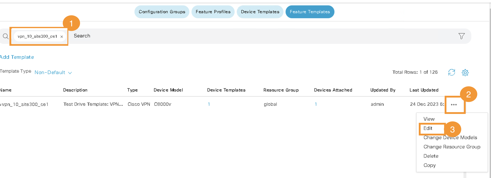
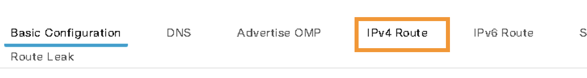
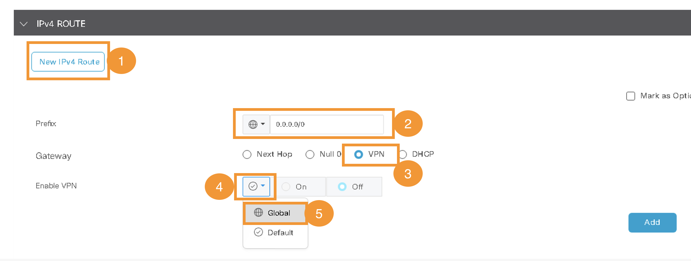
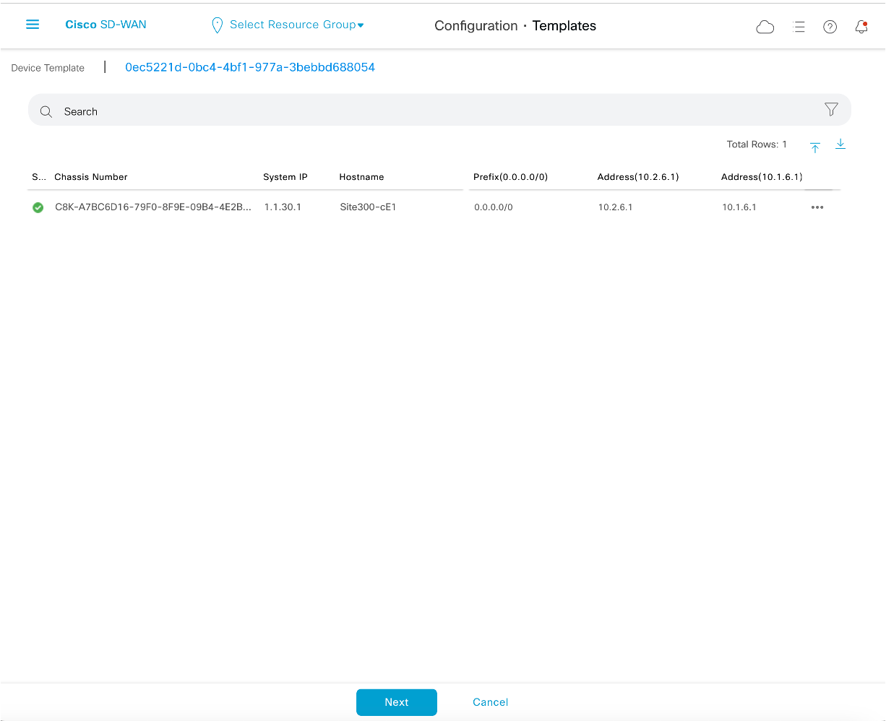
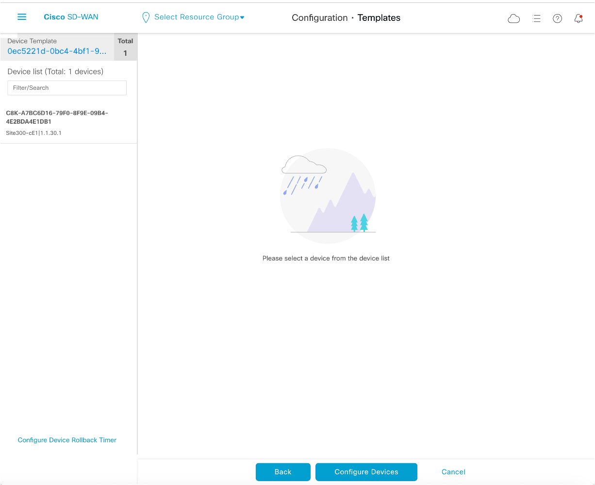
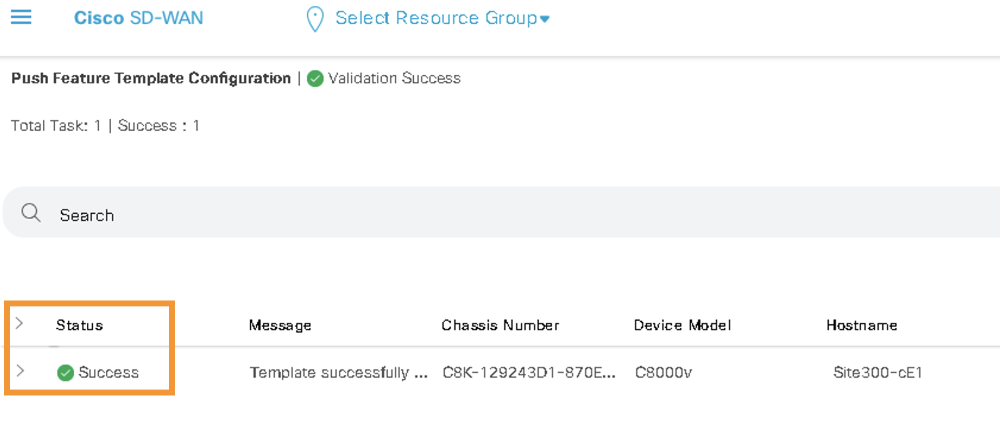
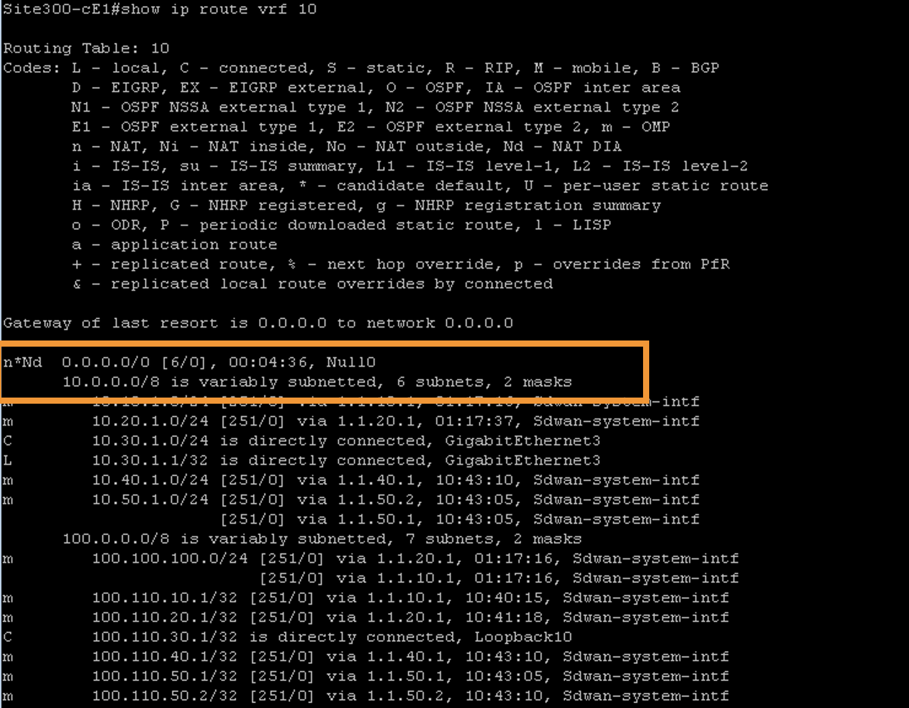
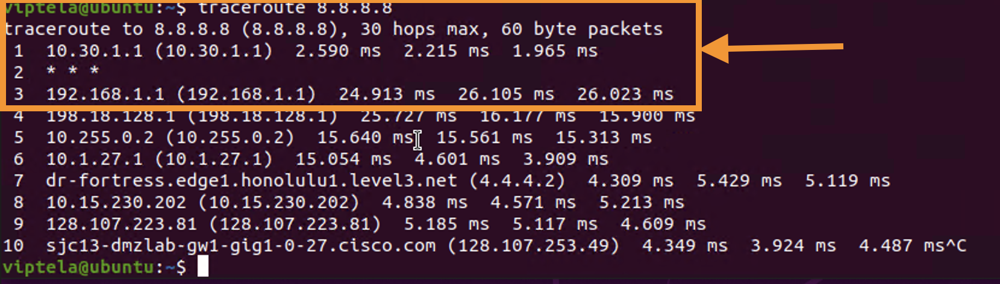

Task 4 - Direct Internet Access for Site300
Step 1 - Enable DIA on Site300 VPN10
– On node Site300-cE1, add a default route in VPN 10 pointing to VPN 0. This is done by modifying the VPN10 template.
- On vManage, navigate to Configuration>Templates>Feature Templates


-
Then on the search bar, search for
vpn_10_site300_ce1-
Click on IPv4 Route and enter following values 
-
Click New IP Route
- Prefix : 0.0.0.0/0
- Gateway : VPN
- Enable VPN : Click on grey tick and select Global

-
Enable VPN : On

-
Click Add and then Click Update at the bottom of page
-
-
Click Next

- Click Configure Devices

- Verify Config-Push is successful

Step 3 - Verify Internet Connectivity on Site300 VPN10
_ - Open mPutty and logon to Site300-cE1 vEdge

- Use the following command to verify routing table. default route on vrf 10
show ip route vrf 10

-
Logon again to Ubuntu on Site300 VPN10 using mRemoteNG.
-
Open browser, Internet access should now be possible.

- Open Terminal, and ping 8.8.8.8. Ping is successful.

- On Terminal do a tracroute again for 8.8.8.8 using following command. Now the packets are going direclty to internet
traceroute 8.8.8.8

Step 4 - Verify Internet Connectivity on Other VPNs
- At this stage direct Internet access is only on Site300 VPN10. There is no internet connectivity on other VPNs, verify lack of Internet connectivity on Site300 VPN12 Ubuntu host using mRemoteNG application on RDP.